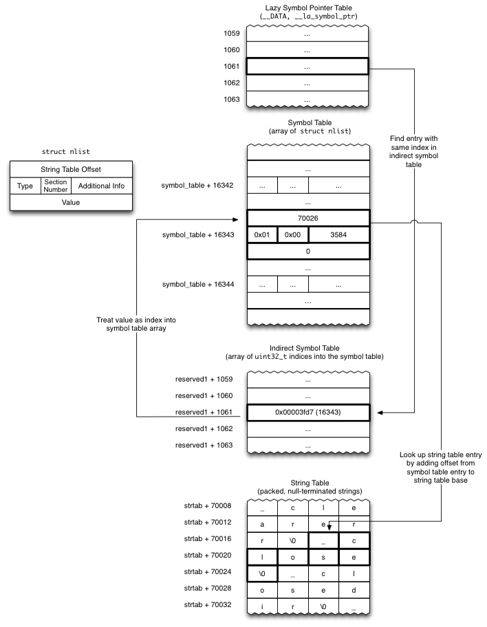

一、HOOK概述
HOOK(钩子) 其实就是改变程序执行流程的一种技术的统称!
二、iOS中HOOK技术的几种方式
1、Method Swizzle
利用OC的Runtime特性，动态改变SEL（方法编号）和IMP（方法实现）的对应关系，达到OC方法调用流程改变的目的。主要用于OC方法。
2、fishhook
fishhook 是Facebook提供的一个动态修改链接mach-O文件的工具。利用MachO文件加载原理，通过修改懒加载和非懒加载两个表的指针达到C函数HOOK的目的。
* How it works
通过更新Mach-O二进制文件的__DATA段的特定部分中的指针，dyld绑定了惰性和非惰性符号。fishhook通过确定传递给rebind_symbols的每个符号名称的更新位置，然后写出相应的替换项来重新绑定这些符号。
对于给定的image，__DATA段可能包含两个与动态符号绑定相关的部分：__nl_symbol_ptr和__la_symbol_ptr。 __nl_symbol_ptr是指向非延迟绑定数据的指针数组（这些指针在加载库时被绑定），而__la_symbol_ptr是指向导入函数的指针数组，通常在第一次调用该符号期间由一个名为dyld_stub_binder的例程填充（也可以告诉dyld在启动时绑定这些）。为了找到与这些部分中的某个部分中的特定位置相对应的符号的名称，我们必须跳过几个间接层。对于两个相关的部分，the section headers（来自<mach-o / loader.h>的结构）提供了一个offset（在reserved1字段中），称为间接符号表。位于二进制文件的__LINKEDIT段中的间接符号表仅仅是符号表（也在__LINKEDIT中）的索引数组，其顺序与非惰性和惰性符号部分中的指针顺序相同。因此，给定结构节nl_symbol_ptr，该节中第一个地址的符号表中相应的索引是indirect_symbol_table [nl_symbol_ptr-> reserved1]。符号表本身是一个struct nlists数组（参见<mach-o / nlist.h>），并且每个nlist在__LINKEDIT中包含一个到字符串表中的索引，其中存储了实际的符号名称。因此，对于每个指针__nl_symbol_ptr和__la_symbol_ptr，我们可以找到相应的符号，然后找到相应的字符串与请求的符号名称进行比较，如果匹配，我们用该替换替换该部分中的指针。
在惰性或非惰性指针表中查找给定条目的名称的过程如下所示：

原理
MachO 是被谁加载的 DYLD动态加载
ASLR（地址空间配置随机加载） MachO文件加载的时候是随机地址
PIC 位置代码独立
- 如果MachO内部需要调用系统的库函数时
- 现在——DATA段中简历一个指针，指向外部函数
- DYLD会动态的进行绑定！将MachO中的DATA段中的指针，指向外部函数
3、Cydia Substrate
Cydia Substrate 原名为 Mobile Substrate ，它的主要作用是针对OC方法、C函数以及函数地址进行HOOK操作。当然它并不是仅仅针对iOS而设计的，安卓一样可以用。官方地址：http://www.cydiasubstrate.com/
Cydia Substrate主要由3部分组成：
MobileHooker
MobileHooker顾名思义用于HOOK。它定义一系列的宏和函数，底层调用objc的runtime和fishhook来替换系统或者目标应用的函数.
其中有两个函数:
MSHookMessageEx 主要作用于Objective-C方法
void MSHookMessageEx(Class class, SEL selector, IMP replacement, IMP result)MSHookFunction 主要作用于C和C++函数
void MSHookFunction(voidfunction,void* replacement,void** p_original)
Logos语法的%hook 就是对此函数做了一层封装
MobileLoader
MobileLoader用于加载第三方dylib在运行的应用程序中。启动时MobileLoader会根据规则把指定目录的第三方的动态库加载进去，第三方的动态库也就是我们写的破解程序.
safe mode
因为APP程序质量参差不齐崩溃再所难免，破解程序本质是dylib，寄生在别人进程里。 系统进程一旦出错，可能导致整个进程崩溃,崩溃后就会造成iOS瘫痪。所以CydiaSubstrate引入了安全模式,在安全模 式下所有基于CydiaSubstratede 的三方dylib都会被禁用，便于查错与修复。